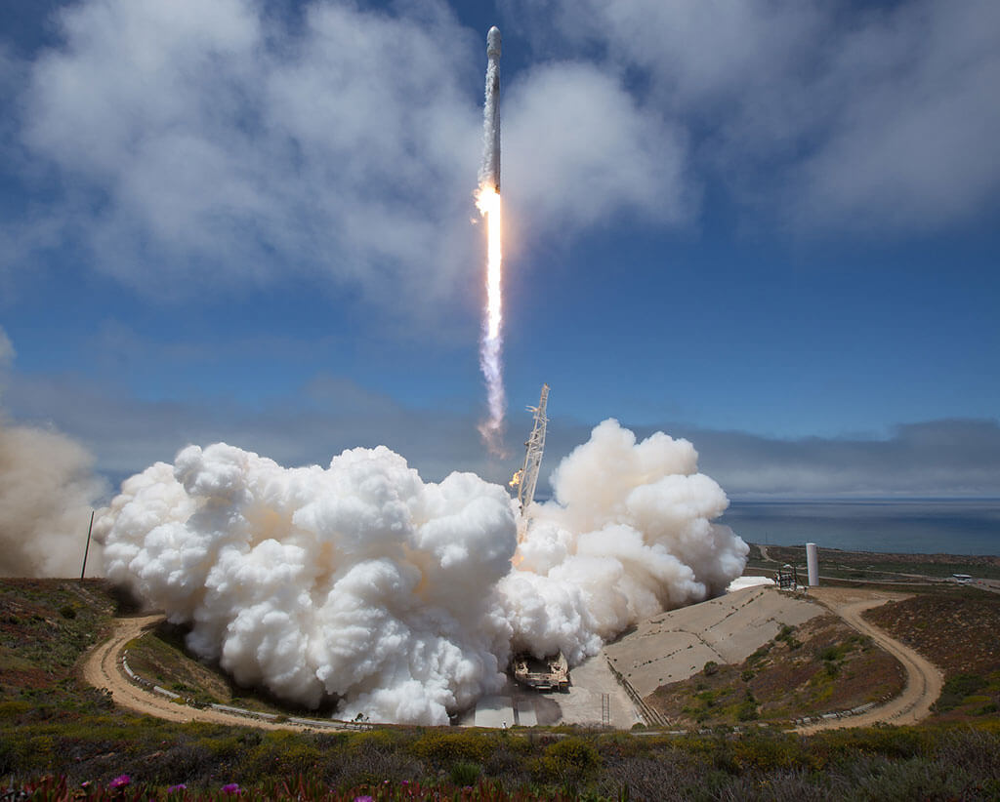
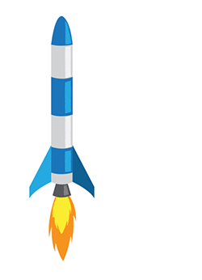
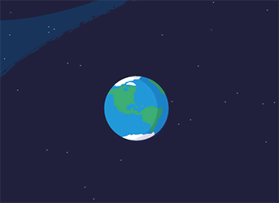

We launch things into space by putting them on rockets with enough fuel — called propellant — to boost
them
above most of Earth's atmosphere. Once a rocket reaches the right distance from Earth, it releases the
satellite
or spacecraft.

We launch satellites and spacecraft into space by putting them on rockets carrying tons of propellants.
The
propellants give the rocket enough energy to boost away from Earth's surface. Because of the pull of
Earth's
gravity, largest, heaviest spacecraft need the biggest rockets and the most propellent.
How does a rocket lift off?
More than 300 years ago, a scientist named Isaac Newton laid out three basic laws that describe the way
things move. One of the laws says that for every action, there is an equal and opposite reaction. This
is the most important idea behind how rockets work.

If you see pictures or videos of a launch, you'll see exhaust streaming out the bottom of the rocket.
Exhaust is the flames, hot gases and smoke that come from burning the rocket's propellants.
The exhaust pushes out of a rocket's engine down toward the ground. Thats the action
force. In response, the rocket begins moving in the opposite direction, lifting off the
ground. Thats the reaction force.
How to Orbit Earth:
Let's say you want to launch a satellite that orbits Earth. The rocket will launch, and when it gets to
a specific distance from Earth, it will release the satellite.
The satellite stays in orbit because it still has momentum—energy it picked up from the rocket—pulling
it in one direction. Earth's gravity pulls it in another direction. This balance between gravity and
momentum keeps the satellite orbiting around Earth.
Satellites that orbit close to Earth feel a stronger tug of Earth's gravity. To stay in orbit, they must
travel faster than a satellite orbiting farther away.
The International Space Station orbits about 250 miles above the Earth and travels at a speed of about
17,150 miles per hour. Compare that to the Tracking and Data Relay Satellites, which help us get
information to and from other NASA missions. These satellites orbit at a height of more than 22,000
miles and travel much slower—about 6,700 miles per hour—to maintain their high orbit.

How to Get to Other Planets:
If you're trying to get to another planet, you'll need a fast-moving rocket to overcome Earth's gravity.
To do that, you'd have to speed up to around 25,000 mph. But you'll also need to figure out the best
time to leave Earth to get to that planet.
For example, Mars and Earth reach their closest distance to each other about every two years. This is
the best time to go to Mars, since it requires the least amount of propellant and time to get there. But
you'll still need to launch your rocket at the right time to make sure the spacecraft and Mars arrive at
the same place at the same time.